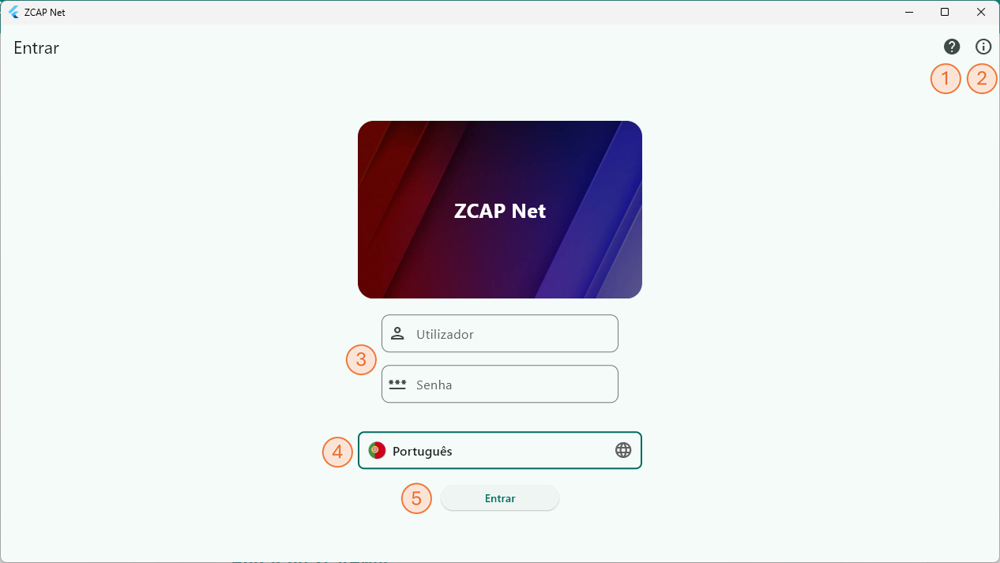
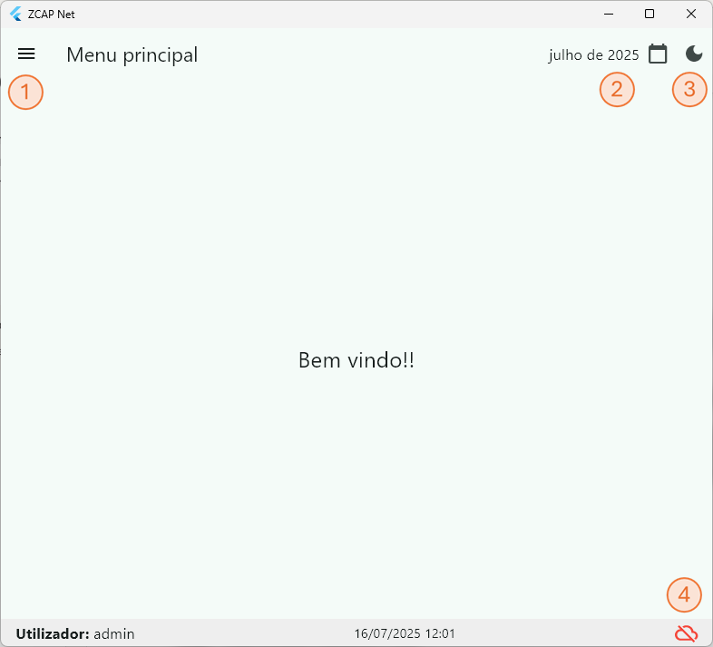
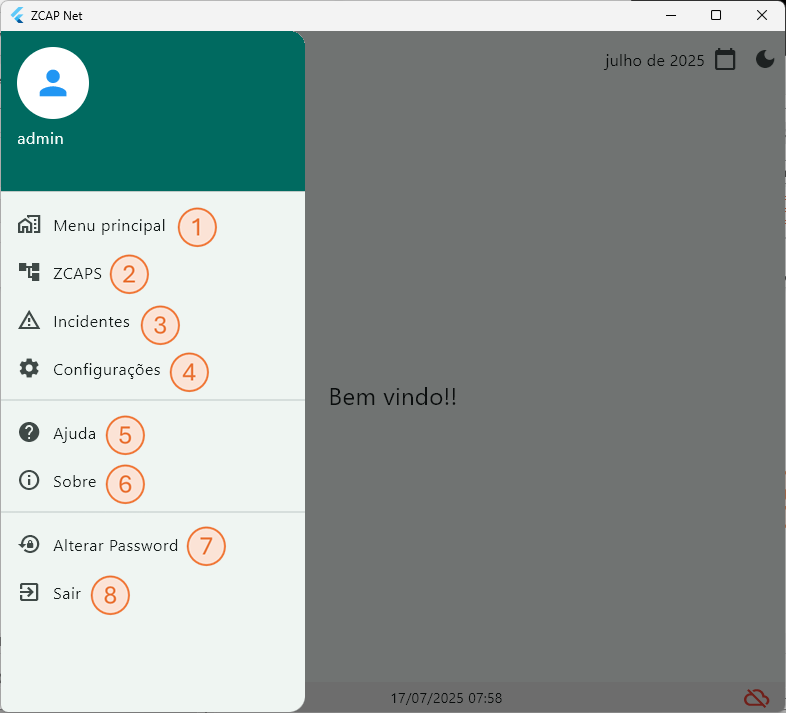
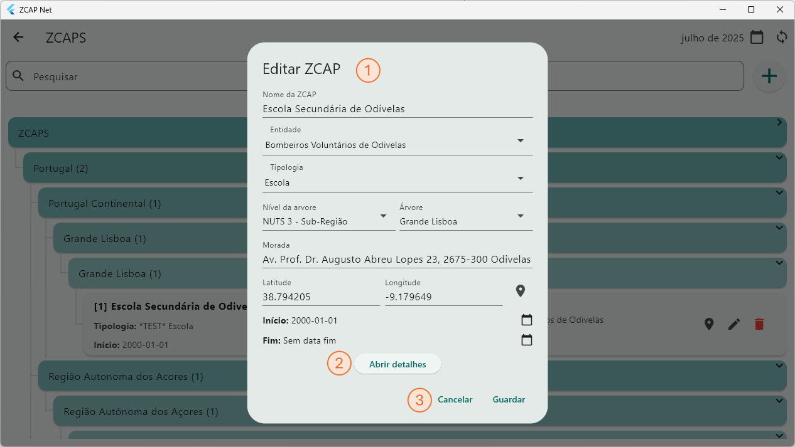

Introdução
O alojamento temporário de emergência é uma valência do apoio psicossocial em emergência, essencial para proporcionar ao cidadão individual e às famílias um local seguro para permanecerem, antes, durante e após um acidente grave ou catástrofe, onde são igualmente asseguradas as suas necessidades básicas, bem como apoio psicossocial de emergência.
Esse alojamento temporário é designado por Zona de Concentração e Apoio à População (ZCAP) e a aplicação ZCAPNet - Sistema de apoio à Proteção Cívil, foi criada para permitir o levantamento, registo e gestão dos espaços disponíveis antes da sua necessidade e, aquando da ocorrência de um acidente grave ou catástrofe, seja possível a utilização dessa informação para registo do acolhimento e respetivo apoio prestado.
Embora a arquitetura global do sistema seja a de permitir a centralização dos dados num único ponto (servidor), cada aplicação pode ser utilizada e funcionar autonomamente, sem conectividade com a rede, e enviar os dados posteriormente para a unidade central.
Aconselha-se os novos utilizadores do ZCAPNet a ler este manual, visto ser uma aplicação específica para um determinado nicho de mercado, com as suas próprias especificidades.
Como utilizar o manual
Este manual encontra-se organizado de uma forma simples, clara e objetiva, de modo a que o utilizador tire o máximo partido do mesmo. Pretende-se que, após a leitura do manual, consiga perceber todas as funcionalidades do ZCAPNet e os seus objetivos.
Principais características funcionais do ZCAPNet
- Registo e gestão de ZCAPs - Levantamento das características dos espaços disponíveis para acolhimento.
- Registo e gestão de Incidentes - Abertura de ZCAPs durante a ocorrência de um acidente grave ou catástrofe.
- Registo e gestão de Pessoas acolhidas - Acolhimento e tratamento de dados da população acolhida no contexto de um Incidente.
- Funcionamento offline-first - Garantia de operabilidade em contexto de ausência de rede.
- Sincronização - Receção e envio de dados de e para o sistema central para reporte e coordenação.
Outras características:
- Suporte Multi-lingua
- Gestão de utilizadores por perfil e acesso a dados
- Modelação fléxível da árvore hierárquica do sistema
- Modelação flexível dos formulários das ZCAPs (detalhes dos espaços)
- Modelação flexível dos formulários de acolhimento (dados recolhidos, necessidades especiais, tipos de apoio)
ZCAPNet - Sistema de apoio à Proteção Cívil
Indice
TODO
Entrar no ZCAPNet
O ecrã de entrada da aplicação disponibiliza as opções:
- Ajuda - Acesso ao manual da aplicação.
- Acerca de - Informação sobre o sistema, projeto e autores.
- Dados de acesso - Introduza o nome de utilizador e palavra passe previamente fornecida.
- Idioma - Seleccione o idioma a utilizar.
- Entrar - Validar as credenciais e entrar no sistema.
Para aceder às restantes funcionalidades, introduza o nome de utilizador e palavra passe préviamente fornecida e pressione "Entar".

| Qualquer alteração realizada na aplicação, será visível apenas localmente até que os dados sejam sincronizados com a base de dados central e posteriormente distribuído para os restantes sistemas. |
Menu principal
No menu principal é onde o utilizador encontra as principais operações disponíveis para o seu perfil.
Dependendo do perfil do utilizador, algumas das opções podem não estar disponíveis ou serem apenas de consulta (consultar Perfis de Utilizador).
- Menu lateral - Acesso às opções da aplicação (ver Menu lateral)
- Data do sistema - Data de referência do sistema, usado para filtrar informação nos menus de ZCAPs e Incidentes. Por defeito assume o mês atual. Para consultar dados de meses anteriores alterar a data.
- Modo dia/noite - Permite alternar entre o modo diurno e noturno.
- Indicador de estado e sincronização - Indica se a base de dados remota está disponível para receção e envio de atualizações.
Estado Online Offline 
Caso a base de dados remota esteja disponível, a sincronização acontecerá de forma automática e períodica (ver Instalação) mas a sincronização pode ser iniciada manualmente clicando no icone de estado. Se a base de dados remota estiver disponível, deve surgir novamente a solicitação da palavra passe do utilizador.

Menu lateral
O menu lateral disponibiliza acesso às opções e funcionalidades disponíveis ao utilizador:
- Menu Principal - Regresso ao Menu Principal
- ZCAPS - Menu de gestão de Zonas de Concentração e Apoio à População (ver ZCAPS)
- Incidentes - Menu de gestão de Incidentes (ver Incidentes)
- Configurações - Menu de acesso às configurações do ZCAPNet (ver Configurações)
- Ajuda - Consulta do manual do utilizador (este documento).
- Sobre - Informação sobre o sistema, projeto e autores.
- Alterar Password - Permite ao utilizador alterar a sua palavra passe.
- Sair - Terminar sessão/mudar de utilizador.

Alterar password
Introduza a palavra passe atual e uma nova palavra passe, repetindo novamente no campo "Confirme a Password". Não está definido atualmente nenhuma politica de complexidade ou repetição de palavras-passe. Pressione "Guardar" para confirmar a alteração.

ZCAPs
Uma das principais funcionalidades do sistema é a gestão das Zonas de Concentração e Apoio à População. O sistema foi concebido por forma a poder adaptar-se a uma realidade evolutiva o que significa que os exemplos fornecidos podem divergir da realidade no momento da consulta deste documento.
- Regresso para o menu/ecrã anterior
- Pesquisa - Pesquisa pela designação de uma ZCAP mostrando todos a apenas os resultados da palavra inserida
- Data/Sincronização - Nesta zona encontram-se dois botões:
Data - Permite seleccionar/alterar o mês de trabalho da aplicação. A lista de ZCAPs visível na lista é sempre as que se encontram ativas no mês seleccionado (data inicio anterior ao final do mês e data fim posterior ao inicio). 
Sincronização - Inicia o processo de envio/receção de dados com a base de dados central. (ver Sincronização) - Novo - Adicionar uma nova ZCAP (ver Novo/Editar ZCAP)
- Árvore Hierarquica - A árvore hierarquica associada às ZCAPs permite associar uma ZCAP a qualquer um dos níveis existentes. O número de níveis e o seu significado depende da configuração de níveis (ver Configuração).
- ZCAP - Cartão resumo dos dados da ZCAP. Disponibiliza também as opções:
| Localização - Mostra no mapa a licalização da ZCAP (requer informação de Latitude e Longitude) | |
| Sincronização Pendente - Representa um registo modificado a aguardar sincronização. (ver Sincronização) | |
| Editar - Editar dados da ZCAP seleccionada. | |
| Eliminar - Elimina o registo seleccionado na base de dados local. Atenção:Registos eliminados localmente mas existentes na base de dados central podem ser repostos após sincronização. Para deixar de ver uma ZCAP listada, usar as datas inicio/fim. |

Novo/Editar ZCAP
Criar uma nova ZCAP ou editar uma existente é um processo semelhante. Preencha ou altere os dados do formulário conforme adequado.
- Lista de fixa de campos:
- Nome - Designação da ZCAP.
- Entidade - Entidade responsável pela gestão da ZCAP. Lista de valores editável nas configurações do sistema.
- Tipologia - Tipo de edificio/equipamento. Lista de valores editável nas configurações do sistema.
- Nível da arvore - Nível da árvore onde será posicionada a árvore. Lista de valores editável nas configurações do sistema.
- Árvore - Valor do nível da árvore à qual pertencerá a ZCAP. Lista de valores editável nas configurações do sistema.
- Morada - Morada da ZCAP
- Latitude/Longitude - Coordenadas de georeferenciação da ZCAP no formato graus decimais.
- Data Inicio/Fim - Define o período de validade da ZCAP, a dafa fim não é obrigatória ficando o registo disponível para todas as datas posteriores à data inicio.
As ZCAPS estarão disponíveis para utilização no intervalo de datas seleccionado.
- Abrir detalhes - Abre o formulário de preenchimento dos detalhes da ZCAP. Este formulário contém diferentes Categorias de detalhe e Detalhes, conforme a escolha da Tipologia. A definição da lista de detalhes é editável nas configurações do sistema.
- Cancelar/Guardar/Fechar - Dependendo do perfil de utilizador, as opções disponíveis são:
- Cancelar/Guardar - O utilizador tem permissões para editar e guardar registos.
- Fechar - O utilizador tem apenas permissões de consulta.

Detalhes da ZCAP
- Categoria de detalhe - Os detalhes das ZCAPs estão divididos em categorias para simplificar a sua organização no ecrã e posterior utilização em ferramentas de análise.
- Detalhe - Cada detalhe pode receber um tipo de dados diferente, pode ser de preenchimento obrigatório ou não. Ver configurações.
- Cancelar/Guardar/Fechar - Dependendo do perfil de utilizador, as opções disponíveis são:
- Cancelar/Guardar - O utilizador tem permissões para editar e guardar registos.
- Fechar - O utilizador tem apenas permissões de consulta.

Incidentes
Incidentes
Configurações
Configurações
Ajuda
Ajuda
Sincronização
Sincronização
Sobre
Configurações